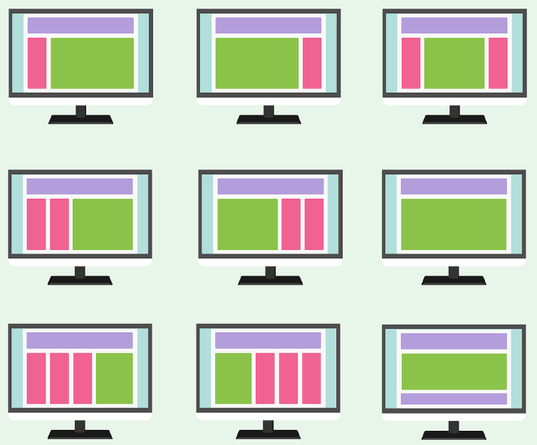
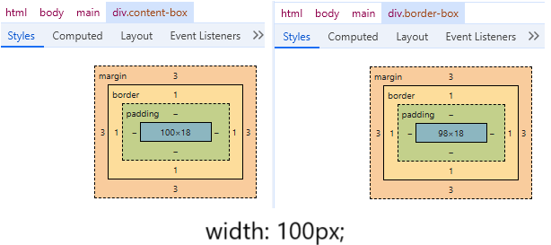
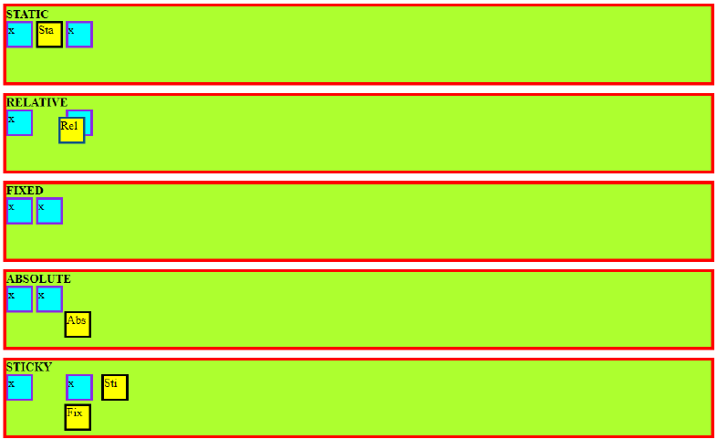
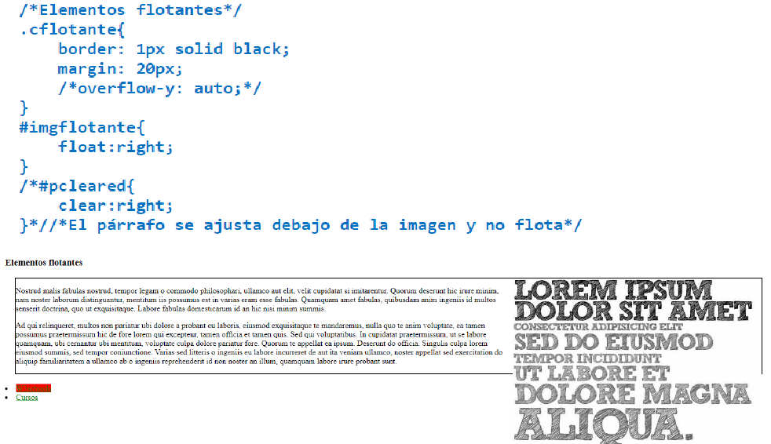
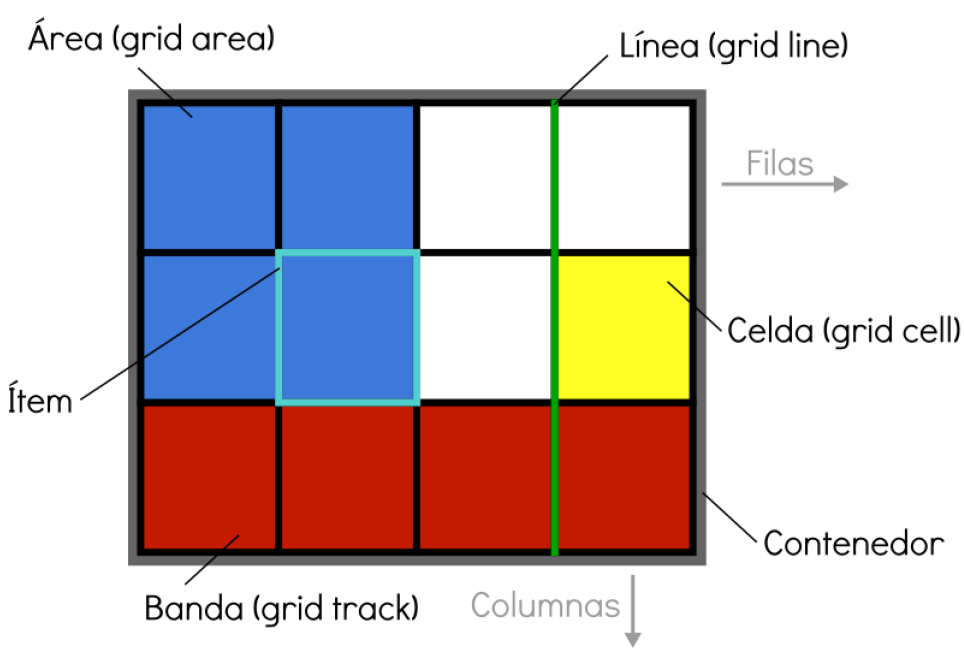
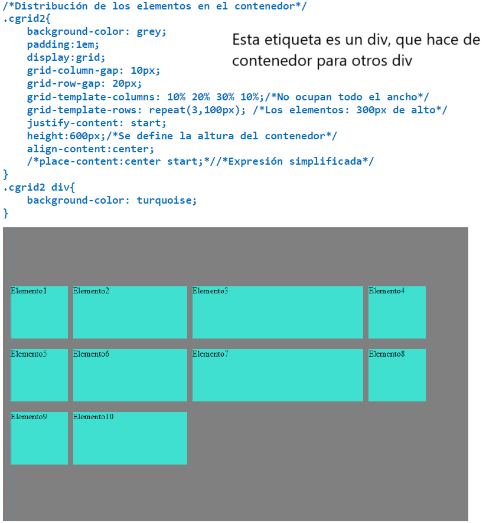
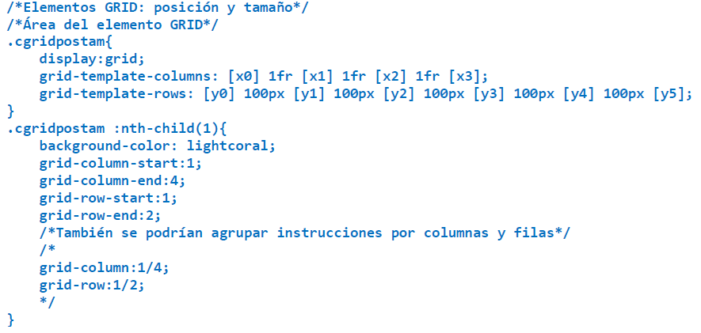
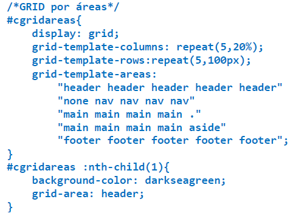
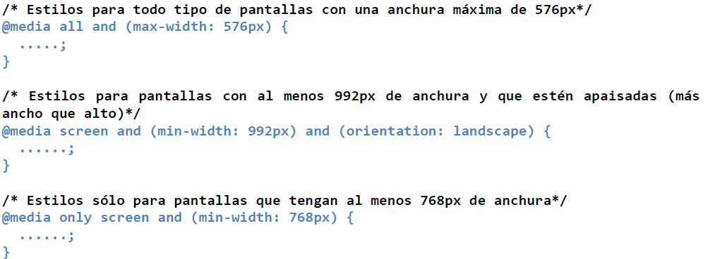

La maquetación web engloba un conjunto de tareas y herramientas
utilizadas para definir la disposición de los distintos elementos
(imágenes, texto, etc…) que forman una página web para concretar la
estructura visual de la misma. A los esquemas que definen esta
estructura visual se les denomina layouts.
Fixed: se establece un tamaño fijo en píxeles para
todos los elementos. Ofrece un control total pero en pantallas
pequeñas puede aparecer scroll horizontal y en pantallas muy anchas
un espacio en blanco alrededor de la página.
Elastic: se establece la anchura de los elementos
con em. Al hacer zoom se puede escalar el diseño, pero los elementos
que ocupen el mismo tamaño pueden solaparse y sigue apareciendo
scroll horizontal en pantallas pequeñas.
Fluid: se utiliza %, así que se mantienen las
proporciones en cualquier tipo de pantalla. Aun así, en pantallas
pequeñas las columnas pueden ser muy estrechas, provocando celdas
demasiado alargadas. Además, las imágenes y vídeos con tamaño fijo
dan problemas.
Híbridos con max/min width: se combinan los
anteriores casos con estas dos propiedades de la anchura. La
intención es que al crecer o decrecer, los contenedores no superen
ciertos límites.
Responsive: se trata de que los layouts cambien en
función de las características de la pantalla en la que se van a
mostrar; por tanto, se tienen varios layouts.

Concepto de layout
Consideraciones previas
Antes de comenzar a maquetar hay que tener en cuenta:
Se deben crear esquemas previos, crear bocetos de las interfaces.
Hay aplicaciones específicas para ello, como Mockflow, Ninjamock o
Moqups.
Se debe diseñar de lo grande a lo pequeño, es decir, definir la
distribución espacial de los contenidos antes de definir los
elementos del documento HTML.
Es recomendable usar las herramientas de desarrollador, a las que
se accede desde el navegador mediante F12 o la opción
Inspeccionar. Ayuda a identificar código asociado a las páginas,
entre otras cosas.
Tomar ideas de otras páginas, no para copiar y pegar sino como
inspiración.
Probar la página en diferentes navegadores. Cada uno tiene sus
hojas de estilo propias, así que no se va a ver igual el
resultado. Utilizar varios navegadores ayuda a corregir errores.
Tener paciencia.
Conceptos clave
Flujo de elementos
Lo navegadores muestran los elementos en orden siguiendo dos
reglas básicas: cuando los elementos están en línea, parten de la
parte superior izquierda, se colocan de izquierda a derecha, de
modo que, cuando no caben más en una línea, los siguientes
elementos pasan a la siguiente línea del navegador; cuando los
elementos están en bloque, se apilan uno debajo del anterior. La
propiedad display especifica el tipo de flujo de cada
elemento en el navegador.
inline: los elementos se posicionan de lado a
lado en la misma línea; solo aceptan margen horizontal e ignoran
la anchura y la altura. Etiquetas como img,
span o a, tienen este valor por defecto.
block: los elementos rompen el flujo y provocab
un salto de línea tanto anterior como posterior. Se posicionan
de arriba a abajo y no tienen las restricciones de los
anteriores. La mayoría de elementos de las páginas web tienen
este valor.
inline-block: los elementos fluyen con el texto
cmo un inline, pero aplican la asignación de anchura y altura y
se puede modificar su padding.
none: desactiva su presentación, sin dejar un
espacio vacío.
flex: se aplica al padre; sus contenedores
hijos podrán ser alineados y el espacio sobrante se puede
distribuir como considere el desarrollador también. Basa su
distribución en una dirección espacial. Hay instrucciones sobre
como usarlo en un enlace del footer.
grid: es similar a flex, pero se basa en dos
direcciones espaciales. Más adelante se explica en profundidad.
Los valores relativos a tablas (table,
table-row, table-cell, table-caption,
etc.) permiten que la etiqueta simule el comportamiento del
elemento de tabla al que hace referencia.
Box-sizing
Hay que tener en cuenta que los elementos dentro del navegador
ocupan la anchura y la altura de su contenido, pero también las
dimensiones del padding y el borde. Para cuadrar este
comportamiento, existe la propiedad box-sizing. Su valor
por defecto es content-box, en el que, al indicar el
ancho o alto de un elemento, este es el del contenido, con lo que
el tamaño del borde y del padding se añadirán después. Si su valor
es border-box, este tamaño indicará tanto el contenido
como el borde y el padding.

Comparación entre border-box y content-box con un borde de 1px y
un ancho de 100px
Centrado
Se puede centrar toda la página, textos o elementos concretos. Hay
varias maneras de lograrlo.
Centrado horizontal:
Si los elementos son inline se debe añadir
text-align: center; al contenedor padre.
Si se pretende centrar un elemento en bloque dentro de su
contenedor, se le añade margin: x auto; y anchura.
Para varios elementos en bloque dentro de un contenedor:
text-align: center; al padre.
display: inline-block; a los elementos a
centrar.
Usar grid.
Centrado vertical:
Elementos inline:
Asignar al padre el mismo padding arriba y abajo.
Si es una celda de una tabla o se simula que lo es, se
puede usar vertical-align: middle;.
Con grid.
Elementos en bloque:
Utilizando posicionamiento tanto en el padre como en el
hijo.
Con flexbox.
Posicionamiento
Los elementos normalmente están dentro del flujo de la página. La
propiedad position, indica el tipo de posicionamiento
usado para un elemento cuando se desean mover los elementos con
respecto a donde les correspondería según el flujo normal. Le
acompañan las propiedades top, bottom,
left, right y z-index. Las cuatro
primeras indican desplazamiento conforme a un punto de referencia
y se expresan en px o %. En cambio, z-index sirve para indicar
capas, como una tercera dimensión, para evitar solapamientos; se
indica un número entero sin unidades, que representa la capa. La
capa por defecto es 0.

Ejemplos de la propiedad position
Valores de position:
static: el valor por defecto, flujo normal sin
posicionamiento.
relative: se posiciona respecto a su propia
posición original. Por ejemplo, con left: 20px; se
añadirían 20px a la izquierda, desplazándolo a la derecha.
fixed: en referencia al documento. Mantendrá
esa posición aunque el usuario haga scroll.
absolute: es como fixed, pero en referencia al
elemento padre posicionado más cercano o, si no hay, a la
ventana del navegador.
sticky: se comporta como relative hasta que se
llega, scrolleando, a una posición concreta, a partir de la cual
se comporta como fixed.
inherit: la propiedad position no se hereda,
así que hay que añadir este valor a los hijos si se pretende que
se propague en cascada.
El posicionamiento es complicado, para profundizar y ver más
ejemplos, se puede visitar
Posicionamiento W3School. La cabecera de esta página también está posicionada, así que
con las herramientas de desarrollador (F12) se puede jugar con
ella en línea para probar opciones.
Elementos flotantes
La propiedad float especifica si un elemento debe salir
del flujo normal y aparecer a la izquierda o a la derecha de su
contenedor, donde los elementos de texto y los de línea aparecerán
a su alrededor. Es utilizada para envolver imágenes con texto.
Puede tener tres valores: right, el elemento flota a la
derecha de su bloque contenedor, left, flota a la
izquierda de su bloque contenedor, o none, valor por
defecto.
La propiedad clear se usa para controlar el
comportamiento de los elementos flotantes. Especifica si un
elemento puede estar al lado de elementos flotantes que lo
preceden o si debe ser movido (cleared) debajo de ellos. Puede
tener cuatro valores: right, el elemento es desplazado
hacia abajo para limpiar elementos flotantes a la derecha,
left, el elemento es desplazado hacia abajo para limpiar
elementos flotantes a la izquierda, both, el elemento es
desplazado hacia abajo para limpiar tanto elementos flotantes de
la izquierda como de la derecha, o none, valor por
defecto.
Puede darse la circunstancia de que un elemento flotante exceda
del tamaño de su contenedor, ya que este, para calcular sus
dimensiones, no atiende al elemento flotante. Para solucionar
esto, se pueden usar las propiedades overflow-x y
overflow-y.

Código de un div flotante que contiene una img flotante y un p
clear
Maquetación Grid
En el footer hay un enlace con ejemplos visuales de combinaciones de
propiedades grid.

Resumen visual de elementos grid
Contenedor: elemento padre contenedor que definirá
la cuadrícula o rejilla mediante la propiedad
display:grid (establece una cuadrícula en bloque) o
display:inline-grid (establece una cuadrícula en línea).
Item o elemento: los elementos hijos que contiene
el contenedor.
Celda (grid cell): unidad mínima de la cuadrícula
("cuadrito").
Area (grid area): conjunto de celdas.
Banda (grid track): banda horizontal o vertical de
celdas de la cuadrícula. Este concepto es similar al de fila o
columna.
Línea (grid line): separador horizontal o vertical
de las celdas de la cuadrícula.
Propiedades del contenedor
Primero, hay que utilizar la propiedad display con uno de
los valores mencionados con anterioridad. Después hay que
especificar la estructura de la cuadrícula. Antes de proceder, hay
que tener clara la distribución de los elementos deseada, para así
evitar problemas posteriores.
Las propiedades básicas son:
grid-template-columns: número y tamaño de las
diferentes columnas; tantos valores como columnas. Se pueden
usar px, %, fr (fracción del espacio restante) o auto (espacio
restante). Con la expresión "repeat(veces, tamaño)", se puede
acortar el código si varias columnas son iguales.
grid-template-rows: es como la anterior, pero
para filas.
grid-column-gap: separación entre columnas.
grid-row-gap: separación entre filas.
Por defecto los elementos del GRID ocupan todo el ancho de la
celda que le corresponde, pero se puede optar por otro tipo de
alineaciones horizontales dando valores a la propiedad
justify-items.
start: al principio de la celda (izquierda).
end: al final de la celda (derecha).
center: centrados.
stretch: ocupan todo el ancho (valor por
defecto).
Por lo que respecta a la alineación vertical, por defecto los
elementos GRID ocupan todo el alto de la celda que le corresponde,
pero se puede optar por otro tipo de alineaciones verticales
asignando valores a la propiedad align-items.
start: al principio de la celda (arriba).
end: al final de la celda (abajo).
center: centrados.
stretch: ocupan todo el alto (valor por
defecto).
Es posible y recomendable definir conjuntamente la alineación
horizontal y vertical de los elementos mediante la propiedad
place-items, indicando primero el valor para
align-items y a continuación para justify-items.

Contenedor grid
Propiedades de los elementos
Son los hijos directos del elemento contenedor. De manera individual
se pueden modificar sus propiedades para definir el área que van a
ocupar y especificar sus alineaciones horizontal y vertical.
Cuadrícula básica:
grid-column-start: en qué columna empieza el
elemento, generalmente se especifica la línea vertical.
grid-row-start: en qué fila empieza el
elemento, generalmente se especifica la línea horizontal.
grid-column-end: en qué columna acaba el
elemento, generalmente se especifica la línea vertical.
grid-row-end: en qué fila acaba el elemento,
generalmente se especifica la línea horizontal.
grid-column: propiedad comprimida (start/end).
grid-row: propiedad comprimida (start/end).
Los valores de estas propiedades se pueden definir mediante el
número de línea (grid line) donde empieza o termina, los nombres
de las líneas donde empiezan o acaban las áreas, o usando span con
el valor de la extensión.
CSS asigna automáticamente un identificador numérico a cada grid
line. No obstante, si así lo desea, el desarrollador también puede
asignar identificadores personalizados a las grid lines mediante
corchetes y utilizar estos nombres como referencia.
Alineación vertical y horizontal:
Es posible asignar una alineación horizontal a un elemento de
manera individual, mediante la propiedad justify-self.
También se puede asignar una alineación vertical particular a un
elemento mediante la propiedad align-self. Sus valores
son los mismos que los que se han visto en el apartado anterior.

Ejemplo de código de elementos grid
Grid por áreas
es posible combinar celdas en áreas, nombrarlas y utilizarlas para
maquetar indicando el nombre y posición concreta de cada área del
Grid. Para ello se ha de utilizar la propiedad
grid-template-areas en el contenedor, donde se debe
especificar el orden de las áreas en la cuadrícula. Se pueden
utilizar símbolos especiales, como "none" (no se colocará ninguna
celda en esta posición) o "." (se colocará una celda vacía en esta
posición). Posteriormente, en cada ítem hijo, se ha de utilizar la
propiedad grid-area para indicar el nombre del área del que
se trata.

Ejemplo de código de grid por áreas
Diseño responsivo
Responsive Web Design (RWD) o Diseño Web Responsivo es una técnica
para desarrollar interfaces que hace uso de media queries y hojas de
estilos, estableciendo unas medidas de ancho en tamaños proporcionales
para hacer una estructura flexible y que el contenido de la web se
adapte a las distintas resoluciones de pantalla. Los sitios web
responsivos responden al tamaño del navegador en cualquier momento. No
importa cuál sea el ancho del navegador, ya que el sitio ajusta su
diseño (y a veces también su funcionalidad) de una manera optimizada
para la pantalla. De esta forma la experiencia de usuario no se ve
afectada.
Viewport y tipos de layout
Fluid layout es el tipo que usa el diseño responsivo.
Tipos de layout con detalles
Tipo
Ventajas
Desventajas
Fixed
Se tiene un control total sobre el layout ya que se
especifican dimensiones fijas. Este tipo de Layouts puede
tener sentido si no se quiere cambiar nunca el layout ni sus
proporciones en ningún dispositivo.
Puede aparecer un scroll horizontal en pantallas pequeñas
(si no se escala).
Elastic
Control al hacer zoom-in y zoom-out. Se mantienen las
proporciones.
Muy similar a fixed, puesto que el tamaño de la letra está
definido en píxeles. Es difícil calcular las dimensiones
reales. Ems se calcula en relación al padre. Si se tienen
diferentes tipos de letra, va a ser necesario hacer
cálculos. No hay fluidez cuando cambia el tamaño de
pantalla. No se adapta bien.
Fluid/Liquid/Relative
Se adapta al Viewport, al tamaño de lo que está viendo el
usuario.
-
Breakpoints y media queries
La anchura de la pantalla en la que se produce el cambio de diseño
es lo que se conoce como breakpoint. Se han hecho varios
estudios; nosotros vamos a utilizar los de la empresa Twitter, que
desarrolló Bootstrap.
Menos de 576px: pantallas pequeñas.
Entre 576px y 768px: móviles apaisados.
Entre 768px y 992px: tablets.
Entre 992px y 1200px: PC, desktop, ordenadores.
Más de 1200px: pantallas grandes.
Las media queries son un tipo de reglas de CSS que permiten
crear un bloque de código que sólo se procesará en los dispositivos
que cumplan los criterios especificados como condición.

Algunos ejemplos de media queries
La estrategia recomendable es crear reglas CSS generales para los
elementos y luego esecificar las particularidades de cada
dispositivo en los media queries. Un concepto interesante que
utiliza esta estrategia es
Mobile First.
Los valores que puede tener el mediatype, es decir, el tipo de medio
al que se le va a aplicar la condición, son:
screen: pantallas; ordenadores, móviles, etc. Es
el más normal.
print: medios impresos o pantallas de
previsualización de estos.
speech: lectores de texto para invidentes.
all: todos los anteriores, es el que se suele
utilizar por defecto.
Otros tipos de medios como braille, embossed,
handheld, projection, tty o
tv aún son válidos, pero están marcados como obsoletos.
Las condiciones pueden ser: width, min-width,
max-width, height, min-height,
max-height, orientation (landscape / portrait),
aspect-ratio, min-aspect-ratio,
max-aspect-ratio, color, min-color o
max-color. Además, estas condiciones se pueden combinar y
modificar utilizando operadores como "and", "not", "all", "only".
Si llegas a un ancho de página de 100px con las herramientas de
desarrollador, encontrarás una sorpresa hecha con media queries.
Tablas y textos en diseños responsivos
Si tienen muchas columnas, pueden ocasionar un scroll horizontal en
toda la página, sobre todo si la pantalla es pequeña. Para ello hay
tres soluciones: esconder columnas, convertir las filas en listas o
crear un scroll horizontal que solo afecte a la tabla.
Para esta última estrategia, hay que envolver la tabla en un
contenedor (un div, por ejemplo), y al susodicho envoltorio,
añadirle la regla overflow-x: auto y width: 100%.
Las ventajas de esta técnica son que no se pierde información y se
respeta el diseño responsivo, aunque no se esta priorizando los
datos contenidos en la tabla (y aunque esté localizado, sigue
habiendo scroll).
En cuanto a los textos, si no se tiene cuidado pueden darse
problemas tales como líneas cortas con pocos caracteres, (lo que
dificulta la lectura), líneas largas con muchas caracteres (lo que
también dificulta la lectura), o caracteres muy pequeños. Lo ideal,
según estudios, es una letra de un tamaño adecuado, para poder leer
sin forzar la vista, y que se disponga formando líneas de entre
60-80 caracteres. Algunas pautas que pueden ayudar son:
Utilizar medidas relativas, como vw.
Calcular el tamaño máximo y mínimo con la función de CSS
calc().
De vez en cuando, no es importante si el texto hace reflow y pasa
a otra línea. Tampoco hay que obcecarse con mantener el tamaño de
línea perfecto.
Si hay que priorizar, es mejor tener en cuenta los móviles y
tablets (mobile first).
En algunos elementos, se pueden usar medidas fijas; por ejemplo,
en los menús de navegación.
Optimización
El servidor tiene que acceder a las hojas de estilo cada vez que un
usuario visita la página. Así, cuanto más grandes y complejos son los
archivos CSS, mayor será el tiempo de carga para ver los contenidos de
una web.
Consideraciones
Utilizar archivos externos para enlazar la hoja de estilos con el
HTML de tu página. El navegador cargará una única vez la hoja de
estilos CSS y la conservará cacheada.
Adaptar previamente las imágenes al tamaño en que quieren ser
mostradas. Por ejemplo, si la imagen va a tener un tamaño máximo
de 100px por 100px, no es recomendable subirla de 500x500.
Usar colores con la notación hexadecimal (HEX) en lugar de RGB.
Utilizar selector universal * únicamente cuando sea necesario.
Organizar las reglas poniendo juntas las que tienen relación.
Además, se deben ordenar por orden alfabético las propiedades de
las reglas o selectores.
Comprimir hojas de estilo. En la medida de lo posible, se debe
utilizar la abreviación (por ejemplo, body { margin: 20px 10px 5px
10px }, en lugar de formulaciones detalladas como: body {
margin-top: 20px; margin-right: 10px; margin-bottom: 5px;
margin-left: 10px}). Es conveniente reducir el código CSS mediante
la eliminación de espacios innecesarios, líneas en blanco y
comentarios.
Herramientas
CSS Minifier: minimiza al máximo el espacio que ocupa el documento CSS.
CSS Optimizer: elimina reglas de estilo redundantes.
Unused CSS: evalúa si hay
reglas de estilo en el documento CSS que no se están aplicando.